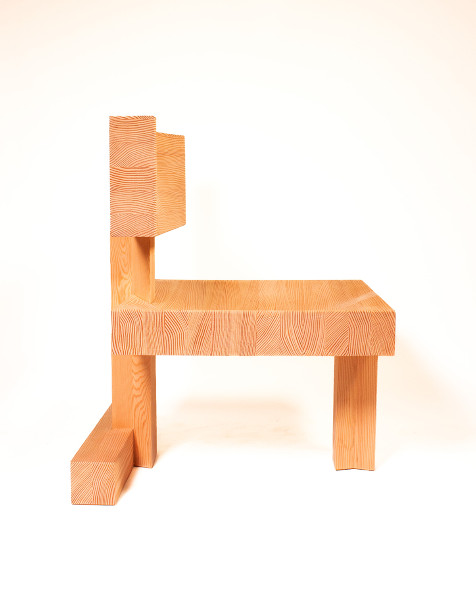
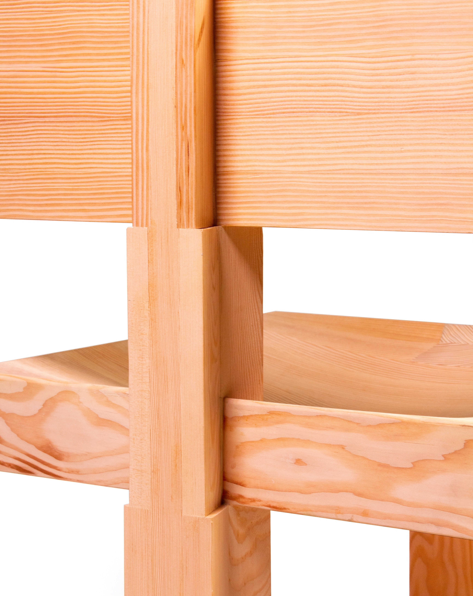
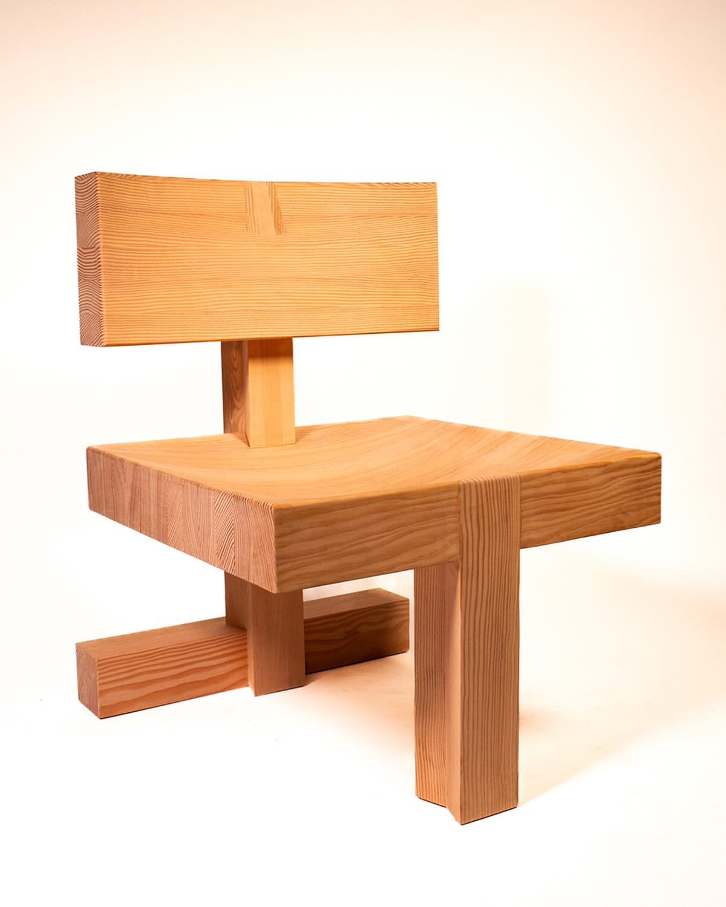
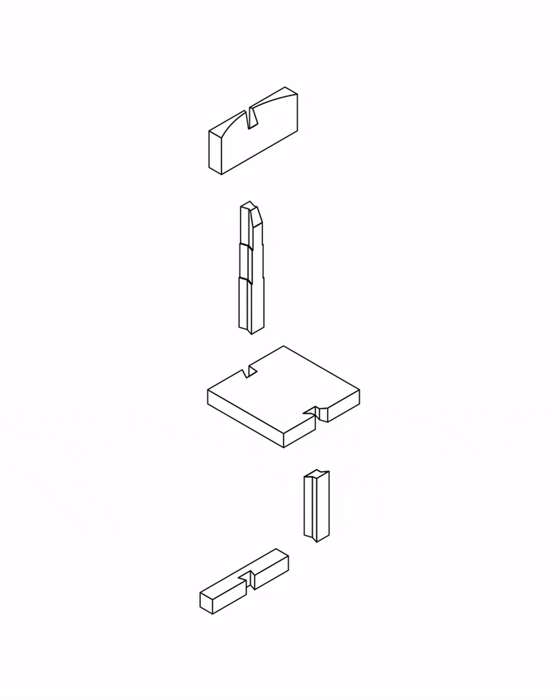

The T-Bone lounge chair, designed with the sole constraint of dovetail joinery, transforms this traditionally discreet detail into a central structural and visual principle. A monolithic front leg and rear beam are anchored to the floor at three precise points, reinforced by a horizontal crossbar, while the seat and backrest fit into precisely cut mortises. The result balances geometric rigor and passive comfort, while reinventing the dovetail joint as a complete assembly system.
The front leg and rear beam are designed as oversized butterfly dovetails: traditionally used as discreet reinforcements, they are amplified here to become the chair's primary structural and visual language.
Designed in collaboration with Alicia Melançon, the T-Bone chair was completed in the context of the 3-week summer chair seminar, under the supervision of Guillaume Sasseville and Félix MacLean at UQAM's School of Design, Summer 2025.



Orthogonal in its composition but softened by the concave curves of the seat and backrest, the T-Bone balances geometric rigor and passive comfort. Made from Douglas fir from British Columbia and treated with non-toxic soap, it reinvents the dovetail joint as a complete assembly system, an innovative strategy that challenges the standards of furniture manufacturing.

Acknowledgements
UQAM Multidisciplinary Workshop:
Rachel Gravouil
Marco Landry
Raphaël Millette
Summer 2025 Chair Cohort
Academic Supervision
UQAM School of Design:
Guillaume Sasseville
Félix MacLean